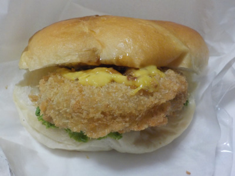
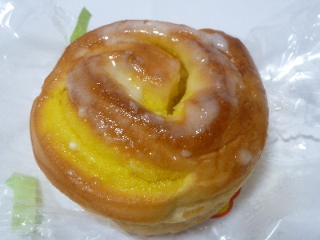
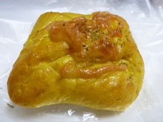
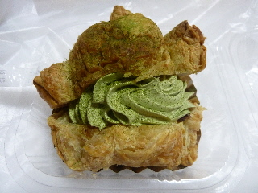
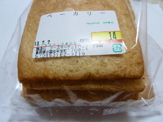
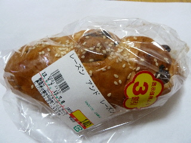
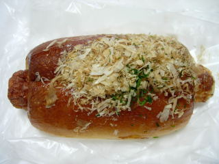
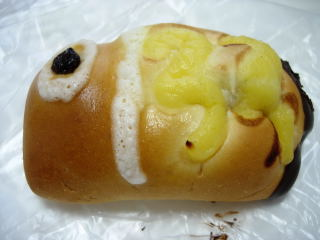

ホック平田店の100円メンチカツバーガー
2019/09/14
普通サイズのメンチカツバーガーなんですが100円プラス税です。
安い。

野菜はほぼないですが、こうゆうのに野菜はいらないですよね。余計な味はいらないです。
マスタードとソース味が効いててメンチカツが美味しくいただけました。
ホック平田店には他にも100円のお買い得パンが色々ありました。
島根県出雲市平田町1708-1
2019/09/14
普通サイズのメンチカツバーガーなんですが100円プラス税です。
安い。

野菜はほぼないですが、こうゆうのに野菜はいらないですよね。余計な味はいらないです。
マスタードとソース味が効いててメンチカツが美味しくいただけました。
ホック平田店には他にも100円のお買い得パンが色々ありました。
2018/06/23
さわやかな感じのレモン味のパンでした。

レモン味ですが、熱が入っているのと砂糖味があるので、マーマレードっぽい部分もありました。
柑橘の味が美味しかったです。
商品名にケーキってあるのは何故かな？形がケーキっぽいからかな。
2015/07/25

タンドリーチキンのパンです。
見た目がちょっとタンドリーチキンっぽいですね。
肉まんのタンドリーチキンバージョンみたいな感じでした。

パン屋さんの抹茶パイシューです。
抹茶クリーム多いですね。
クリームの下には餡が沢山入っていて、甘くて美味しかったです。
2013/07/07
パンの耳がとっても安く販売していました。

なんと14円です。
しかもなんかいい焼き色で美味しそう。
買っちゃいました。
何か工夫して、美味しくいただきたいですね。
2013/07/07
レーズンアンドレーズンなので、レーズン2倍？（当社比）

そんな風には見えないです。実際どうなのかなー？。
ごまがかかったレーズンパンでした。
2010/5/1
ちくわの穴の中にシーチキンが入っていました。

鰹節も沢山かかってますし、タレも付いて濃い味の惣菜パンです。具もちくわがドーンとあるし、その中にはシーチキンが入っていますので、盛り沢山です。
ちくわの中に具を入れるってチーチクみたいでいいですね。
中身を替えれば色んなパンが出来そうです。

こどもの日が近いので、こいのぼりのパンもありました。
季節感があるし、可愛くていいですね。
スーパーのベーカリーコーナー